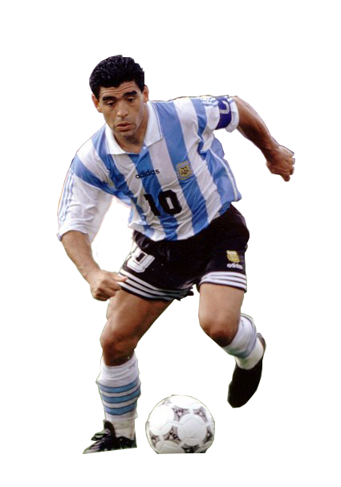

Maradona
Es considerado como uno de los mejores jugadores en la historia de este deporte, siendo calificado por muchos futbolistas y exfutbolistas, por periodistas y prensa en general, por personalidades, técnicos y relacionados a entes deportivos y admiradores del fútbol en general, como el mejor futbolista de la historia, asimismo ha sido catalogado como el mejor jugador de la historia de los mundiales, ha sido elegido como el Mejor Jugador del Siglo con el 53,6% de los votos en una votación oficial realizada en el sitio web de la FIFA y obtuvo la tercera ubicación en una encuesta efectuada por los miembros de la Comisión del Fútbol de esa institución y los suscriptores de la FIFA Magazine.
Maradona consiguió importantes logros deportivos tanto con la Selección Argentina como con algunos de los clubes en los que jugó. Con la selección fue campeón en 1986, subcampeón en 1990 y campeón del Mundial Juvenil en 1979. Sus logros más importantes a nivel de clubes los obtuvo jugando para el Nápoli, donde ganó una Copa de la UEFA y los únicos dos scudettos que posee la institución. Tiene el record de ser el jugador que cinco veces fue máximo goleador del campeonato de Argentina.
Desde el 28 de marzo de 2009 y hasta el último partido disputado en Mundial de Sudáfrica, el 3 de julio de 2010, fue Director Técnico de la Selección Argentina. Posteriormente, ha dirigido al club Al Wasl de Dubái entre mayo de 2011 y julio de 2012, sin conseguir buenos éxitos.
Sus éxitos deportivos se vieron muchas veces empañados por su adicción a las drogas, que lo afectó tanto en su carrera futbolística, a través de las suspensiones impuestas por diversas federaciones futbolísticas, como en su salud, ya que en varias oportunidades debió ser internado en terapia intensiva debido a afecciones relacionadas con sus adicciones. Además, se vio involucrado en varios hechos judiciales de diversa índole, entre los que se encuentran el arresto en abril de 1991 por posesión de cocaína y la condena, en 1999, a dos años de prisión en suspenso por agredir a varios fotógrafos con un rifle de aire comprimido en 1994.
Entre las diversas actividades que realizó Maradona fuera del campo de juego a lo largo de su vida, se destacan su labor de conductor televisivo, tanto en Italia como en Argentina y su desempeño como vicepresidente de la Comisión de Fútbol de Boca Juniors entre junio de 2005 y agosto de 2006. Asimismo, fue protagonista de gran cantidad de documentales y películas de ficción. Su figura ha sido motivo de las más variadas referencias en la cultura popular argentina y napolitana.
